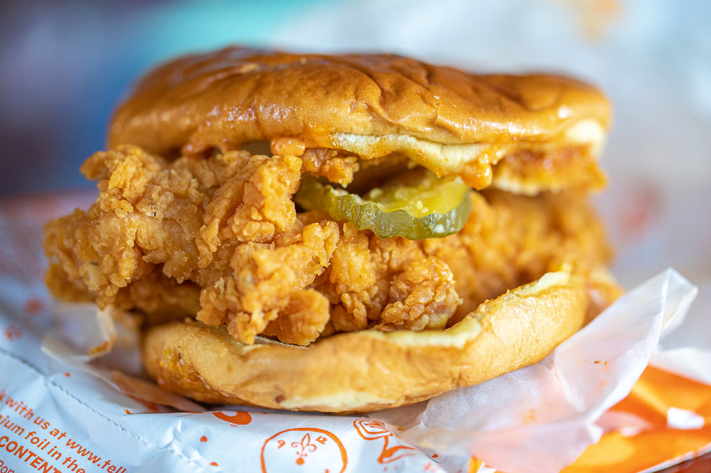

Josh Weissman Popeye's Chicken Sandwich Recipe

Description
Popeye's chicken sandwich, but better from Joshua Weissman's "But Better" series.
Ingredients
Marinade:
- 4-6 boneless skinless chicken thighs
- 2 cups (473ml) buttermilk
- 2tsp (10g) kosher salt
- 2tsp (7g) garlic powder
- 1tsp (4g) serrano powder (any pepper powder works here)
Flour mix:
- 3 cups (395g) all purpose flour
- 2.5 tsp (13g) kosher salt
- 2tsp (7g) garlic powder
- 1.5tsp (6g) smoked paprika
- 1/2 tsp (2g) fresh crackled black pepper
- 1 tsp (4g) cayenne (if you want spicy!)
- *optional - 1tsp (4g) oyster mushroom powder
Mayo:
- ¾ cup (177ml) mayo
- 8 cloves black garlic puree
- 1 tbsp (16g) hot sauce
- Kosher salt to taste
- 1tsp (5g) smoked paprika
- Lemon juice to taste
Steps
- Toss chicken in marinade, let sit for an hour minimum or overnight maximum.
- Add all ingredients in a medium sized container Tip: for extra flaky bits – add droplets of marinade into dredge and mix together forming baby clumps)
- Make sure chicken is coated in flour and place on baking sheet with a rack. Do not pile on top of each other.
-
See the rest of this recipe at joshuaweissman.com